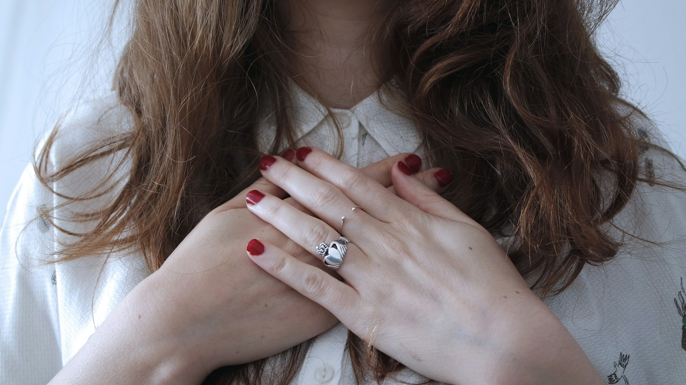
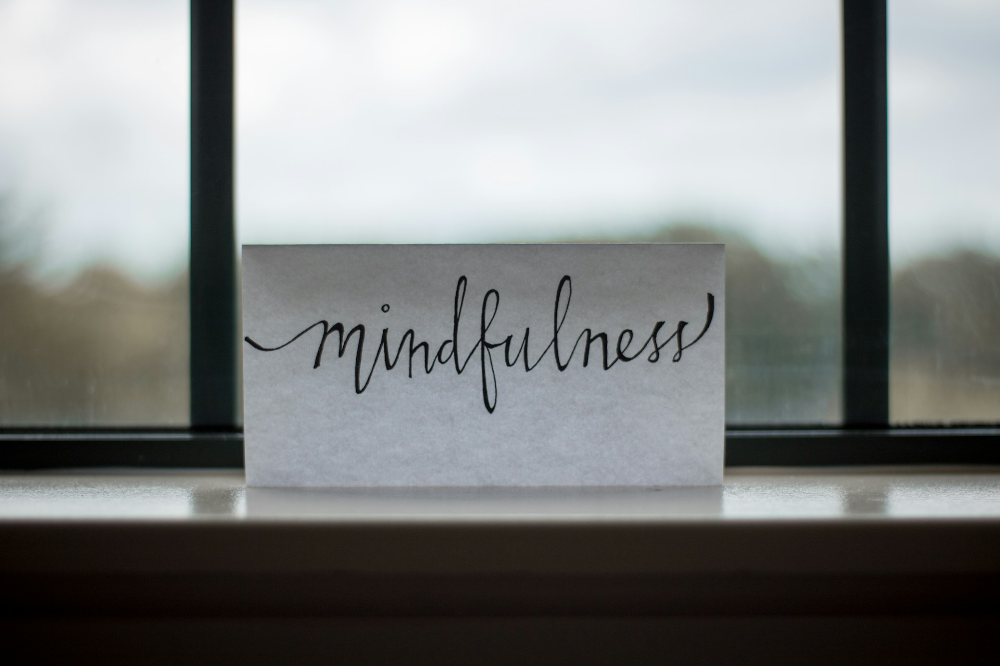

Life can be amazing, but it can also be tough sometimes. As a girl, you face unique challenges that can affect your physical and mental health. But don't worry, I've got you covered! In this post, I'll share some tips and tricks to help you live your best life. From self-love to goal-setting, I'll cover it all. Plus, I'll dive into the power of your subconscious mind and how you can harness it to achieve your dreams.
Self-Love

-
Practice positive affirmations:
Start your day by looking in the mirror and telling yourself how amazing you are. Yes, it might feel silly at first, but trust me, it works! -
Take care of your skin and hair:
Wash your face twice a day, use a moisturizer, and condition your hair regularly. You'll feel like a queen! -
Embrace your uniqueness:
Don't compare yourself to others. You're special just the way you are, with your own strengths and weaknesses.
Fitness
-
Find a physical activity you love:
Whether it's dancing, jogging, or yoga, make sure it's something that makes you happy and excited. -
Aim for 30 minutes of exercise per day:
You don't have to be a gym rat, but getting your body moving will make you feel energized and strong. -
Focus on progress, not perfection:
Don't be too hard on yourself if you miss a day or two. Just get back at it and keep moving forward.
Mental Health
-
Talk to someone you trust:
Whether it's a parent, teacher, or friend, don't bottle up your feelings. Share them with someone you trust. -
Practice stress-reducing techniques:
Meditation, deep breathing, or even just taking a relaxing bath can work wonders for your mental health. -
Remember that it's okay to not be okay:
Life can be tough, and it's okay to not have it all together all the time. Just know that you're not alone.
Subconscious Mind

-
Your subconscious mind is powerful:
It controls your thoughts, emotions, and behaviors without you even realizing it. -
Use positive affirmations to reprogram your subconscious:
Repeat positive statements to yourself, like "I am capable and confident," to rewire your subconscious mind with positive thoughts. -
Visualize your goals:
Close your eyes and vividly imagine yourself achieving your dreams. Your subconscious mind will start working to make it a reality.
Friendship
-
Surround yourself with positive and supportive friends:
The people you surround yourself with can have a big impact on your life. Choose friends who lift you up and make you feel good about yourself. -
Communicate openly and honestly:
Don't be afraid to share your thoughts and feelings with your friends. It's the best way to build strong, meaningful relationships. -
Be a good friend to others:
Return the favor and be there for your friends when they need you. It's a two-way street!
Goal-Setting
-
Set goals that make you feel excited and motivated:
Whether it's trying out for a hobby, studying, cooking or learning a new skill, make sure your goals are something you're passionate about. -
Break down big goals into smaller, achievable steps:
Don't overwhelm yourself by trying to tackle too much at once. Take it one step at a time. -
Celebrate your successes:
You did it! Take time to celebrate your achievements, nomatter how small they may seem.
Conclusion
You are strong, capable, and amazing, girl! Remember that you're not alone and that I're all in this together. By following these tips and tricks, you can live a happy and healthy life that's true to who you are. And don't forget to harness the power of your subconscious mind to achieve your dreams! Keep shining your light and empowering those around you!